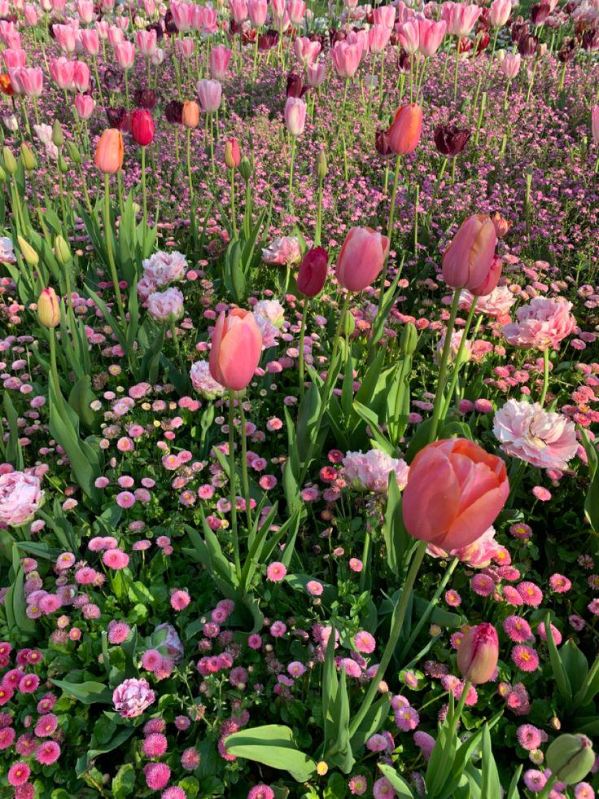
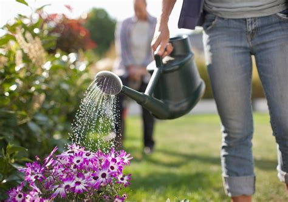
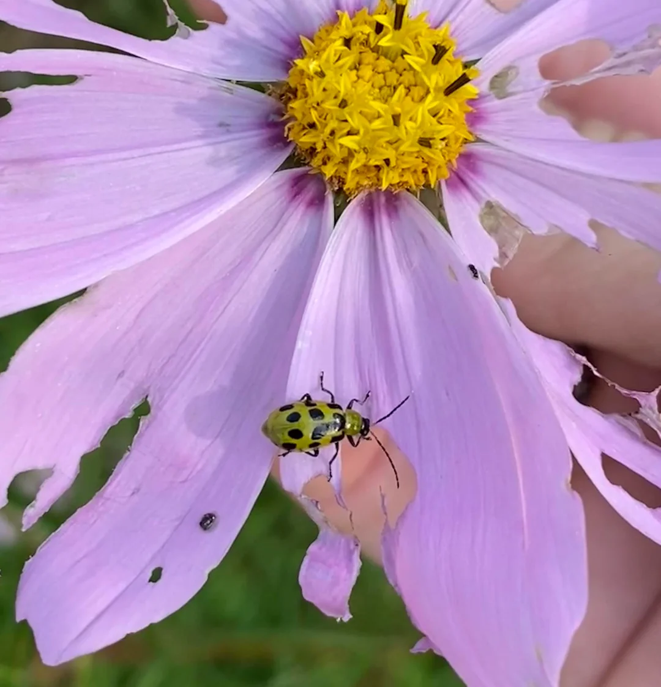
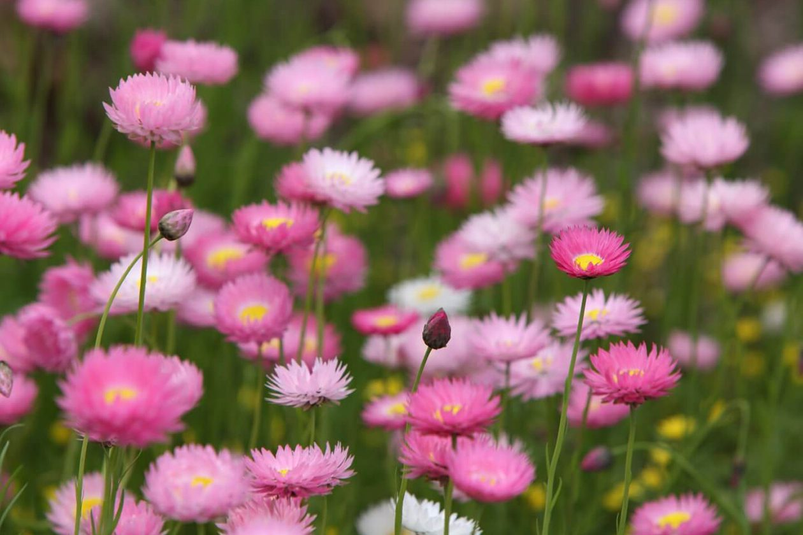
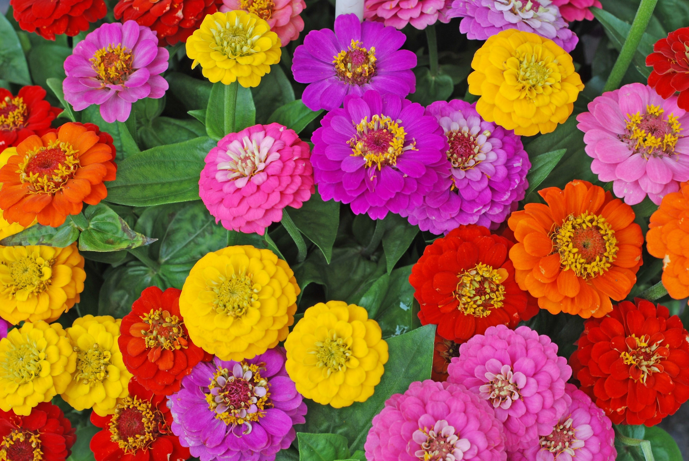
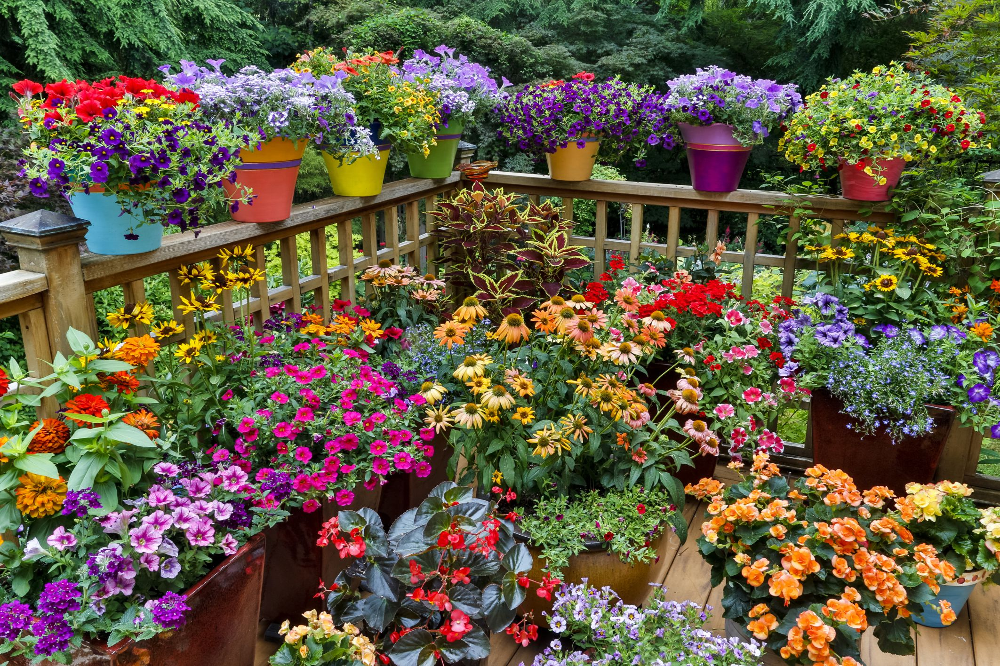

Održavanje cveća nikada nije bilo lakše!
pronađi savete i uputstva koja će vam pomoći da vaša biljka raste i napreduje. Naučite kako da pravilno brinete o svom cveću i uživate u njegovom mirisu i lepoti.
Visegodisnje cvece
Višegodišnje cveće je biljka koja se razvija i raste tokom više sezona. Ove biljke imaju sposobnost da prežive zimu, a svake godine ponovo izlaze iz zemlje i cvetaju. Zbog svoje dugovječnosti, često su odličan izbor za vrtove jer zahtevaju manje održavanja u poređenju sa jednogodišnjim biljkama. Višegodišnje cveće može biti raznih boja, oblika i veličina, a primeri uključuju lavandu, iris, ruže i ljiljane. Osim što su lepe, ove biljke često privlače i korisne insekte poput pčela i leptira, što doprinosi biodiverzitetu.

Kako odabrati pravo višegodišnje cveće za vaš vrt
kako odabrati pravo višegodišnje cveće, uzimajući u obzir tlo, sunčevu izloženost i klimatske uslove, te kako kombinovati biljke za harmoničan izgled vrta.

Zalivanje i nega višegodišnjeg cveća
kako pravilno zalivati višegodišnje cveće, prepoznavanje potrebe za zalivanjem, tehnike navodnjavanja i negu tokom suše, kako bi biljke zdravo rasle i cvetale.

Zaštita višegodišnjeg cveća od štetočina i bolesti
kako prepoznati štetočine i bolesti na biljkama, koje mere zaštite preduzeti, i kako upotreba organskih pesticida, uklanjanje zaraženih delova i zdravo tlo pomažu u očuvanju zdravlja cveća.
Jednogodisnje cvece
biljka koja završava svoj ciklus života u jednoj sezoni. Ove biljke brzo rastu, cvetaju i proizvedu seme, a potom umiru na kraju godine. Zbog svog brzog rasta i intenzivnog cvetanja, često se koriste za dekoraciju u vrtovima i balkonima. Iako zahtevaju više održavanja od višegodišnjeg cveća, njihov šarenolik izgled i bogatstvo boja čine ih veoma popularnim izborom. Neki od najpoznatijih primeraka uključuju petunije, begonije i kadife. Jednogodišnje cveće može takođe privući korisne insekte, kao što su pčele i leptiri.

Kako odabrati pravo jednogodišnje cveće
kako odabrati odgovarajuće jednogodišnje cveće prema klimatskim uslovima, izloženosti suncu, vrsti tla i potrebama za vodom, kao i kako kombinovati biljke koje se slažu po boji i visini.

Najlepše vrste jednogodišnjeg cveća
popularne vrste jednogodišnjeg cveća, uključujući petunije, begonije i kadife, te objasniti njihove karakteristike i prednosti za vaš vrt.

jednogodišnje biljke za specifične delove vrta
Odabir jednogodišnjeg cveća za sunčane i senovite prostore, uz savete o kombinovanju visine biljaka za ravnotežu.